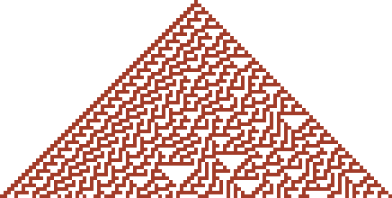
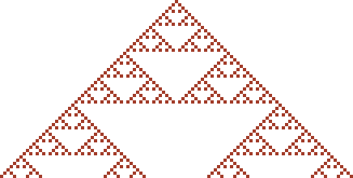
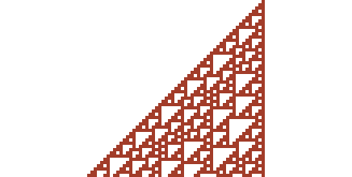

车传凯 / 黑龙江大学 · 软件工程
翻文档、读论文，碰到有意思的地方就记下来。有时候，一张小图比半页公式更容易看懂。



2026 / 11
Pelagos 把纠错解码器的模拟评测摊到多张显卡上，里面有个很容易读错的 7.5 倍。
欧几里得望远镜的数据里有约一万五千个强引力透镜候选体，一张看似拉歪的照片能告诉人不少事。
看 Cloudflare 怎样算清一次设置变更到底会影响哪些记录，顺便读懂「生效快了一半」量的是哪段时间。